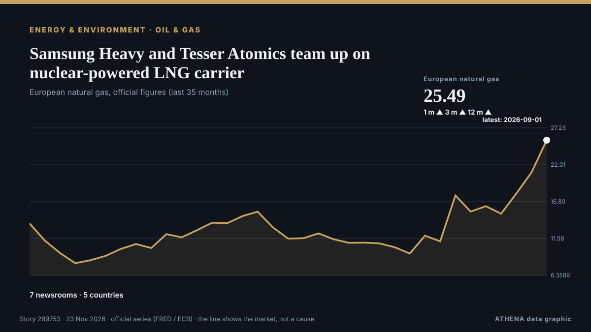

Énergie, ressources et environnement
SponsoriséPrésenté par  Cybernetics and Artificial Intelligence Lab Welcome to the Cybernetics and Artificial Intelligence Laboratory, established at the Department of Business Administration of the National and Kapodistrian University of Athens. The lab is headed by Professor Dimitrios Thomakos. The lab aims to do research that can be published in top venues. Our research uses tools and methods of Artificial Intelligence, and lies in the following areas: - Forecasting - Decision making - Cyber security - Finance We are always looking forward to collaborating with exceptional students!
Cybernetics and Artificial Intelligence Lab Welcome to the Cybernetics and Artificial Intelligence Laboratory, established at the Department of Business Administration of the National and Kapodistrian University of Athens. The lab is headed by Professor Dimitrios Thomakos. The lab aims to do research that can be published in top venues. Our research uses tools and methods of Artificial Intelligence, and lies in the following areas: - Forecasting - Decision making - Cyber security - Finance We are always looking forward to collaborating with exceptional students!
Les titres sont affichés en anglais, tels que publiés.

Pétrole et gazSamsung Heavy and Tesser Atomics team up on nuclear-powered LNG carrier
South Korean shipbuilding giant Samsung Heavy Industries and US nuclear tech firm Tesser Atomics have entered into an exclusive strategic collaboration on a demonstration project for a… de LNG Prime
| 11 nov. | 117 |
|---|---|
| 12 nov. | 90 |
| 13 nov. | 74 |
| 14 nov. | 42 |
| 15 nov. | 51 |
| 16 nov. | 109 |
| 17 nov. | 87 |
| 18 nov. | 84 |
| 19 nov. | 78 |
| 20 nov. | 50 |
| 21 nov. | 39 |
| 22 nov. | 43 |
| 23 nov. | 38 |
| 24 nov. | 0 |
Climate deal collapses in chaotic end to COP31
The COP31 climate talks ended in failure Sunday as a contentious deal collapsed over fossil fuels and the summit stretched into record overtime in Turkey. de Al-Monitor
COP31 ends in failure as countries split over fossil fuels, climate finance
COP31 ended without a consensus deal for the first time since 2009. de Ars Technica
Turkish Authorities Search for Lion Spotted on Outskirts of Istanbul
The National Parks Directorate said specialist veterinarians and teams equipped with thermal imaging cameras were assisting the search, which was focused on a wooded area. de Euronews English
Presidential villa suffers water and power cuts, Nigerian leader says
Bola Tinubu says he was shaving last week when the water cut out - an experience familiar to many Nigerians. de BBC News
As headlines fade, Nepal’s flood survivors are still rebuilding
Months after deadly floods and landslides struck, a Malaysian relief team found families and schools still grappling with the quieter, everyday work of starting again. de Free Malaysia Today
Fight over fossil fuels leaves COP31 climate talks in deadlock
Countries from nearly 200 countries are in a deadlock to try and get a new global climate agreement. de BBC News
COP31 ends without overarching deal
Failure comes as current policies put the world on track for 2.8°C of warming, far beyond the 1.5°C target. de Express Tribune
Villarreal say Pepe's eye surgery not linked to watching solar eclipse
Former Arsenal forward Nicolas Pepe returned to action wearing a protective mask after being out for two weeks following an operation. de Free Malaysia Today
UN Climate Talks End Without Major Deal
COP31 negotiations collapse after deep divisions over fossil fuels and climate finance, leaving key climate commitments unresolved. de News of Bahrain
Britain digging new reservoirs to fight persistent droughts
Havant Thicket Reservoir will be the first to enter service in England since 1992. de The Straits Times
HMM signs green shipping deal with Nextpower
South Korean shipping company HMM said Monday it had signed a deal allowing US solar technology company Nextpower to reflect emissions reductions from HMM’s use of lower-carbon marine fuels in its… de Korea Herald
PM Wong to visit Australia from Nov. 23-25, meet Australian PM Albanese
PM Wong will fly to Australia on Singapore Airlines' inaugural flight to Western Sydney International Airport. de Mothership
COP31 flop triggers backlash in Australia; Pacific nations express despair
Turkey hosted the latest talks, called COP31, in Antalya but shared leadership with Australia. de The Straits Times
LR approves new Rules for nuclear-powered ships and offshore units
The Class Rules are suitable for all ship- and offshore unit- types, are technology agnostic and set the goals and functional requirements for integrating nuclear power with maritime. de Ports Europe
China deals boost global investor confidence in Indonesia: Minister
Global investors' confidence in Indonesia's investment climate is growing, as reflected in US$86.8 billion ... de Antara (English)
'The town is gone': Brazil storm death toll rises to 5
Rain and high winds battered Tupancireta early Friday, tearing up buildings and about 100 trees in the municipality that is home to 20,000 people. de Channels TV
Libya’s Oil Output Plunges as Armed Groups Shut Key Pipelines
Libya’s oil production has crashed by about 350,000 barrels per day (bpd) after an outlaw group closed a valve on the pipeline transporting crude oil from Sharara, the country’s biggest oilfield, the… de OilPrice.com
Saudi Arabia's influence loomed large over failed COP31 deal
Saudi Arabia and fellow Opec members have long opposed climate language targeting fossil fuels, saying they must remain part of the global energy mix. de Free Malaysia Today
Kuala Lumpur otters raise river revival hopes
Beneath a tangle of highway in the Malaysian capital, a family of otters rolls around in a patch of riverside sand, delighting the few passersby who notice them. de Mongabay
Drone attack reported on Kaleykino oil pumping station in Russia's Tatarstan
Residents of Almetyevsk in Russia's Tatarstan region recorded flashes near the village of Kaleykino, where an oil pumping station of the Russian trunk oil pipeline system of the same name is located. de Ukrinform (English)
Korea asks Qatar to prioritize LNG supplies once production, shipping normalize
Industry Minister Kim Jung-kwan on Monday requested that Qatar give priority to supplying liquefied natural gas (LNG) to Korea when Qatari LNG production and navigation through the Strait of Hormuz… de The Korea Times
Rain, Storms and Strong Winds Kick Off Week
Rain and thunderstorms are expected across western and northern regions and parts of the Aegean, while southerly winds could reach 8 on the Beaufort scale and temperatures climb to 24 C. de To Vima (English)
Lawmaker urges habitat protection over Javan Rhino relocation
Conservation efforts for the critically endangered Javan rhino in Banten’s Ujung Kulon National Park must ... de Antara (English)
EU officials reject Cop31 deal as it 'doesn't speak to reality of the climate crisis' – video
The Cop31 climate talks fell into disarray as the EU, UK and allies in the developing world rejected what they called an unacceptable deal on the future of the climate. de Guardian Environment
Around 50 settlements in Rivne Oblast left without power following Russian attack
A Russian strike on the Sarny district in Ukraine's west disrupted the electricity supply to dozens of settlements, while repeated air-raid warning are hampering repair work. de Ukrainska Pravda (English)
EU objects to Cop31 draft deal over failure to mention fossil fuels
Bangladeshi climate advocates welcome key proposals but warn that delivery will depend on public grants, clear timelines and firm obligations for developed countries. de The Business Standard (Bangladesh) (working feed)
At SCO forum in New Delhi, Musadik Malik terms climate change a 'threat' to civilisation
Minister for Climate Change and Environmental Coordination Dr Musadik Malik addresses Shanghai Cooperation Organisation Civilisational Dialogue Forum in New Delhi, India, November 21, 2026.… de Geo News (English)
Pacific climate demands face resistance at COP31
COP31 negotiations have entered a critical second week after Australia’s Minister for Climate Change and Energy, Chris Bowen, presented the first draft of a presidency-led cover decision, setting out… de Post-Courier (PNG)
Russia strikes gas service facility in Dnipropetrovsk region with guided bomb, several injured
Russian forces attacked a gas service facility in the Dnipropetrovsk region with an aerial bomb on Sunday, November 22. de Ukrinform (English)
COP31 climate talks on the brink as new draft deal faces scrutiny
New draft would acknowledge for the first time that global warming is on course to pass the 1.5C threshold. de Al Jazeera English
Fossil Fuels Missing In New COP31 Draft Deal, Tensions Remain Unresolved
Fossil fuels are a flashpoint at the climate talks and the summit comes against a difficult backdrop of soaring energy prices and geopolitical tensions stemming from the war in Iran. de NDTV World
Heavy rain on way for parts of UK
The alert will be in effect for parts of the South West from 6am and remain in place the entire day. de Evening Standard (London)
COP31 climate deal in the balance after fractious talks
Ten years after the Paris Agreement took effect, its durability faces another test. de Khmer Times
Magnitude 4.5 earthquake strikes 20km north-east of Hanmer Springs
GeoNet had received 186 felt reports by 9.25pm, including one reporting extreme shaking and another reporting strong shaking. de Stuff